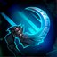
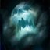
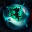
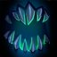
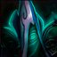

2018-02-06 Rework Diffs
Looking for an overview of changes from a recent hero rework? You've found the place. Green stuff is new, red has been removed. Refer to the Legend below for specifics on box and line highlights.
Legend
-
New
This talent is all shiny and new, and completely green in color -
Changed
UpdatedThe green highlights indicate the new descriptionWhile the red highlights show what the description used to say -
Moved
Moved from level XThis talent has been moved levels; it will have a blue label describing the move.Will generally be followed by a red section listing the old description too -
Unchanged
These white boxes are exactly as they were before; nothing changed here -
Removed
This removed talent is entirely red and sad because it no longer exists for this hero :(
Malthael
Developer Comment: Malthael, while powerful, has relied heavily on Tormented Souls to apply his Reaper's Mark during team fights. By making his Basic Attacks cleave and increasing the usability of Death's Shroud, we're providing more ways to him to apply his Mark to multiple enemies. Not only does this increase his survivability and damage without relying solely on Tormented Souls, it also gives him more options to use Wraith Strike. We've also sought to increase the usability of Last Rites to make it a more enticing Heroic option. Lastly, the ability to apply Reaper's Mark reliably makes it much more powerful, so we've adjusted the tuning of its damage and associated Talents.
- Basic Attacks now cleave in a radius of 3.25 in an arc in front of Malthael
- Damage reduced from 117 to 82
Abilities
-
Soul Rip
UpdatedMana: 20 Cooldown: 2Extract the souls of nearby enemies afflicted by Reaper's Mark, dealing 100 (+4% per level) damage and healing Malthael for 36 44 (+4% per level) per target hit. Heroic targets heal Malthael for an additional 3% of the Hero's maximum Health. -

Wraith Strike
Mana: 30 Cooldown: 5Instantly teleport through an enemy afflicted by Reaper's Mark, dealing 59 (+4% per level) damage and refreshing Reaper's Mark. -

Death Shroud
Mana: 50 Cooldown: 8After 0.25 seconds, unleash a wave of dark mist that applies Reaper's Mark to enemies it hits. -

Tormented Souls
UpdatedMana: 100 Cooldown: 100Gain 10 Armor and Unleash a torrent of souls, continually applying Reaper's Mark to nearby enemies for 4 seconds. -
Last Rites
UpdatedMana: 100 Cooldown: 65 75Apply a death sentence to an enemy Hero that, after 2 seconds, deals damage equal to 50% of their missing Health. Quest: Enemies killed between the application of Last Rites and within 1.5 seconds of it dealing damage permanently reduce its cooldown by 5 seconds, to a minimum of 15 seconds.Range increased from 4 to 5 -
Reaper's Mark
UpdatedBasic Attacks afflict non-Structure targets with Reaper's Mark for 4 seconds. Marked enemies are revealed and take damage equal to 1.75% 2% of their maximum Health every 1 second.
Talents
1
-
Death's Reach
Increase Wraith Strike's range by 35%. -
Fear the Reaper
Cooldown: 25Activate to increase Movement Speed by 25% and pass through other units for 4 seconds. -
On a Pale Horse
Gain an additional 20% Movement Speed while mounted.
4
-
Black Harvest
UpdatedQuest: Apply Reaper's Mark to Heroes for a total of 180 150 seconds. Reward: Permanently increase Reaper's Mark's duration by 2 seconds. -
Die Alone
UpdatedSoul Rip deals 75% more damage to Heroes if it hits only one Hero and no other enemies. -
Throwing Shade
UpdatedQuest: Hit 15 20 Heroes with Death Shroud. Reward: Permanently increase Death Shroud's range by 33%, reduce its cooldown by 4 seconds, and reduce its Mana cost from 50 to 25.
7
-
Cold Hand
Soul Rip Slows enemies by 20% for 2.5 seconds. -
Massacre
Moved from level 16Wraith Strike now damages and applies Reaper's Mark to enemies around its target. -

Touch of Death
Cooldown: 25 30Activate to reduce healing received by Heroes afflicted by Reaper's Mark by 50% for 4 seconds.
10
-
Last Rites
UpdatedCooldown: 65 75Apply a death sentence to an enemy Hero that, after 2 seconds, deals damage equal to 50% of their missing Health. Quest: Enemies killed between the application of Last Rites and within 1.5 seconds of it dealing damage permanently reduce its cooldown by 5 seconds, to a minimum of 15 seconds.Range increased from 4 to 5 -
Tormented Souls
UpdatedCooldown: 100Gain 10 Armor and Unleash a torrent of souls, continually applying Reaper's Mark to nearby enemies for 4 seconds.
13
-
Ethereal Existence
UpdatedGain 10 Physical Armor per enemy Hero afflicted by Reaper's Mark, up to a maximum of 30 40. -
Inevitable End
Cooldown: 20Activate to become Unstoppable for 2 seconds, but remove all active Reaper's Marks. -
Shroud of Wisdom
Cooldown: 30After 2 seconds, gain 50 Spell Armor for 4 seconds. -
Soul Siphon
UpdatedIncrease Soul Rip's bonus healing from Heroes to 3.75% 4% of the Hero's maximum Health.
16
-
Memento Mori
Reaper's Mark deals 80% increased damage after afflicting an enemy for more than 4 seconds. -
Mortality
Moved from level 7When damaging a Hero, Wraith Strike deals bonus damage equal to 6% 4% of the Hero's maximum Health. -
Soul Collector
Reduce Soul Rip's cooldown by 0.5 seconds and increase its range by 50%.
20
-
Angel of Death
Last Rites heals for 100% of the damage dealt, and its current and future cooldown reduction bonuses are doubled. -
Final Curtain
Death Shroud leaves a trail in its wake for 4 seconds, applying Reaper's Mark to enemies in its area. -

No One Can Stop Death
Cooldown: 180Activate while dead to immediately respawn at the Altar but increase Malthael's next respawn time by 25%. -
Reaper of Souls
UpdatedIncrease Tormented Souls' duration by 2 1 seconds. While Tormented Souls is active, Hero Takedowns refresh the duration extend its duration by 4 seconds.